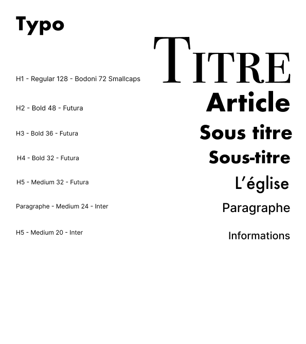
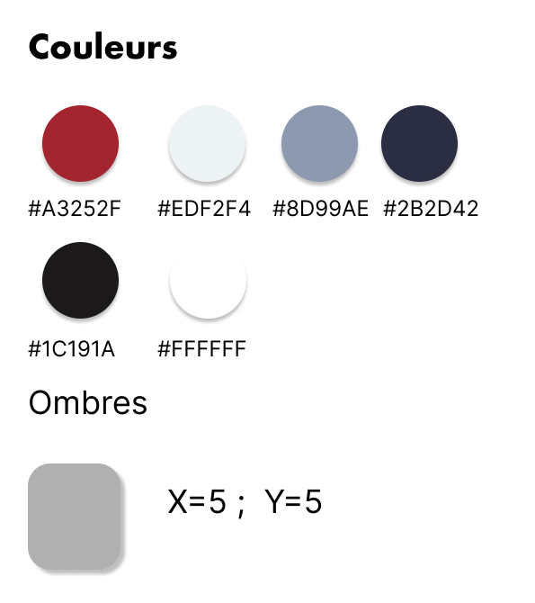
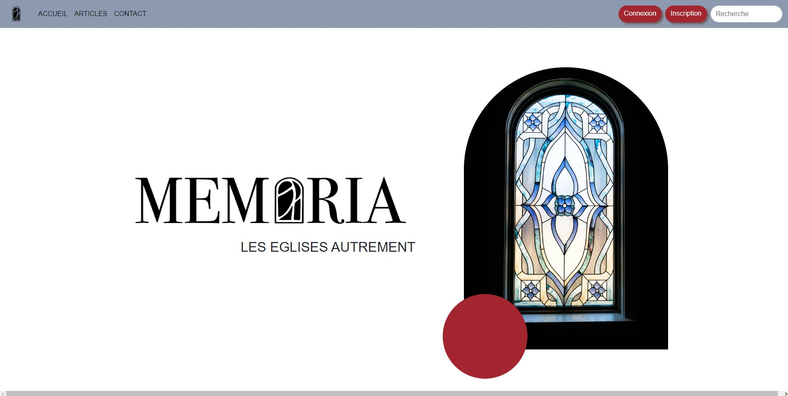

Projet BlogArt
BlogArt est un projet sur 2 semaines.
Le but de ces 2 semaines : créer un blog sur lequel on peut intégrer des articles que l'on aura écrits durant la semaine et le mettre en ligne.
La première semaine a été dédiée au design et à l'écriture de nos 2 articles
Choix des typos
Choix de la couleur


La deuxième semaine a été dédiée à la création du site en HTML CSS avec Bootstrap pour le Front et en PHP et SQL pour le back
Page d'accueil

Dashboard Admin
Création Article


Ce projet nous a permis de réaliser un projet qui pourrait arriver en entreprise et réussir à bien s'organiser en un temps limité